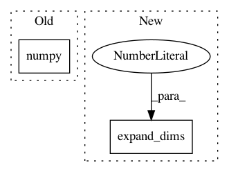

a9b58d07768ec06f8718ec2777f2b0293359f5b4,geomstats/learning/frechet_mean.py,,_ball_gradient_descent,#Any#Any#Any#Any#Any#Any#,177
Before Change
cc_barycenter = exp(torch.from_numpy(barycenter),
torch.from_numpy(lr * grad_tangent.sum(0, keepdims=True)))
cc_barycenter = cc_barycenter.data.numpy()
convergence = metric.dist(cc_barycenter, barycenter).max().item()
barycenter = cc_barycenter
if iteration == max_iter:
After Change
cc_barycenter[i] = metric.exp(barycenter_gs[i], lr_grad_tangent_s[i])
cc_barycenter = gs.expand_dims(cc_barycenter, 0)
convergence = metric.dist(cc_barycenter, barycenter).max().item()
print("conv", convergence)
barycenter = cc_barycenter
In pattern: SUPERPATTERN
Frequency: 4
Non-data size: 2
Instances
Project Name: geomstats/geomstats
Commit Name: a9b58d07768ec06f8718ec2777f2b0293359f5b4
Time: 2020-04-09
Author: hadizaatiti@gmail.com
File Name: geomstats/learning/frechet_mean.py
Class Name:
Method Name: _ball_gradient_descent
Project Name: geomstats/geomstats
Commit Name: a1dd11c68e5911f069a747c917e2a4bfdd5ae4f4
Time: 2020-04-08
Author: hadizaatiti@gmail.com
File Name: geomstats/learning/em_expectation_maximization.py
Class Name: RiemannianEM
Method Name: update_variances
Project Name: tensorflow/agents
Commit Name: 944a10fb2aa273d626fbe6ab0d9a89c2033f8460
Time: 2019-06-05
Author: aurelien.geron@gmail.com
File Name: tf_agents/environments/atari_preprocessing.py
Class Name: AtariPreprocessing
Method Name: _pool_and_resize
Project Name: facebookresearch/Horizon
Commit Name: 3d10b85b30d52d4906af4e91ee5fbd412ff97515
Time: 2018-07-11
Author: edoardoc@fb.com
File Name: ml/rl/training/dqn_trainer.py
Class Name: DQNTrainer
Method Name: train